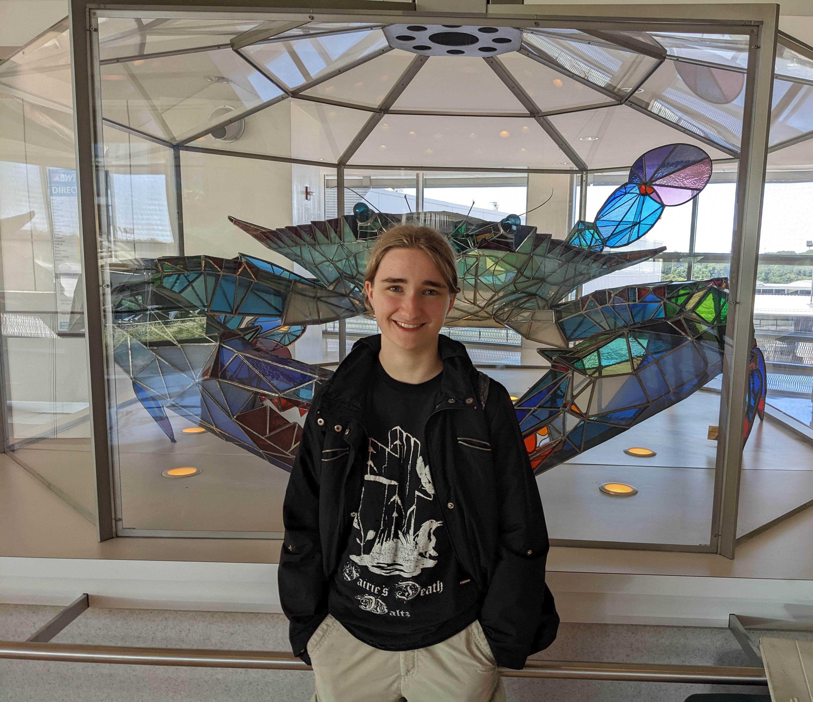

Veronica Poquette

Hello and welcome to my portfolio.
Currently involved
- Computer Information Systems major
- Honors program
- English minor
- Deaf Language & Culture minor
- Concert Choir
- InterVarsity Christian Fellowship
- Web Development Team
Interests
- web development
- creating video games
- writing fiction
- playing video games
Technical skills
- HTML
- Python
- CSS
- ColdFusion
Interpersonal skills
- Problem solving
- Reliability
- Critical thinking
- Communication
Projects
Falling Sand
Blocky
Classroom Simulator
Contact Me